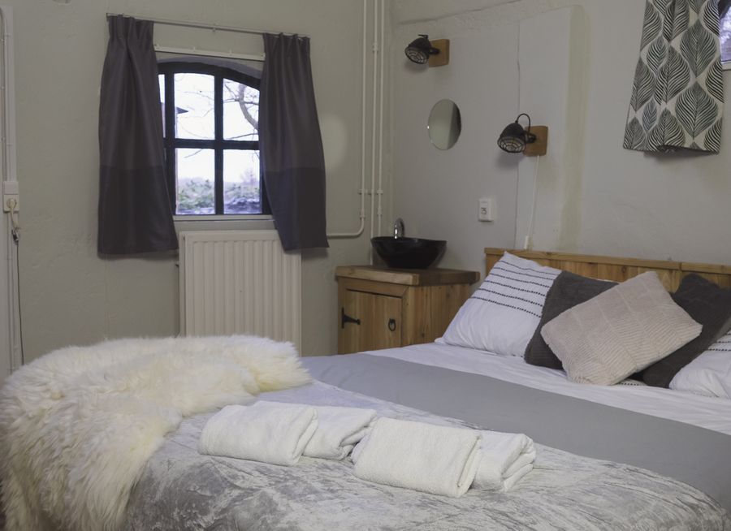

Stalkamers 1 en 2
Twee sfeervolle tweepersoonskamers in de oude stallen, met de steunbalken en stalramen nog in het zicht. Zelfgemaakte meubels, vloerverwarming en een eigen toilet en badkamer.
€ 155 per nacht, 2 personen, incl. ontbijtMeer info